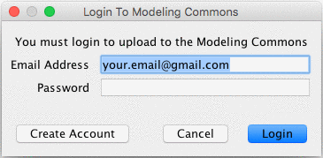
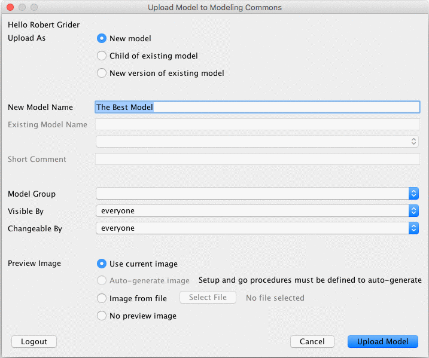
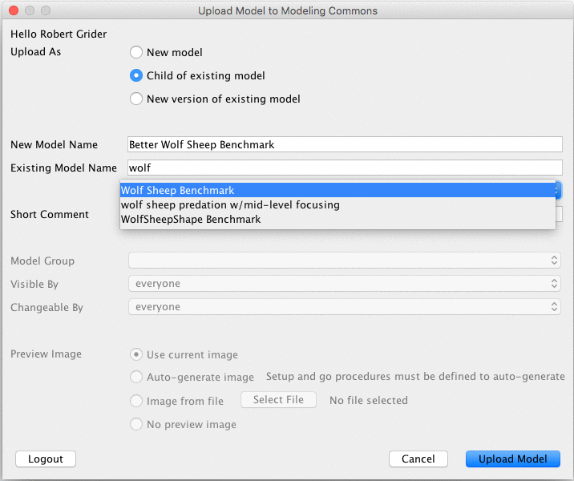

The Modeling Commons (http://modelingcommons.org/) is a Web-based collaboration system for NetLogo modelers. Users of the Modeling Commons can share, download, modify, create variations of, comment on, and run NetLogo models – both those that are a part of the NetLogo models library, and also those that have been uploaded by other NetLogo users.
By uploading your NetLogo models to the Modeling Commons, you make it easy for others to see, review, and comment on your work. You can optionally keep the model private, either to yourself or to a group of your choice, if you aren’t comfortable with letting everyone see the model. You can always change the permissions associated with a model, if you change your mind later on.
NetLogo now makes it possible to save models to the Modeling Commons, just as
you can save them to .nlogo files on your own computer. You can access this
functionality by selecting “Upload to Modeling Commons” from the “File” menu.
Use of the Modeling Commons is free of charge. You may use it for your own personal work, for your research group or company, or for a class in which you are a student or teacher. The Modeling Commons is sponsored by the CCL, the same group that develops and distributes NetLogo.

In order to upload models to the Modeling Commons, you must first be a registered user. Unregistered users can view and download models, but cannot upload, edit, or comment on them.
The first time that you invoke “Save to Modeling Commons” in NetLogo, you will be prompted to enter your e-mail address and password. If you already have an account, then you can enter this information and click on the “Login” button.
If you don’t yet have an account with the Modeling Commons, then you will need to create one. Click on the “Create Account” button, and enter the requested information. Once you have done so, click on the “Create Account” button. If there are no errors, then you will be prompted to upload a NetLogo model. Alternatively, you may go to the Modeling Commons itself and register with your Web browser.
There are three ways to upload a model to the Modeling Commons: Uploading, updating, and creating a child (“forking”). The following sections describe these in detail.
A new model will be created in the Modeling Commons, with its own page, description, and forum. You should use this function the first time that you save a model to the Modeling Commons. 
You must give your model a name. Model names are not required to be unique; you could have 2 or more models with the same name, though we recommend that you not do this.
By default, anyone can view, fork, and update your model. You can restrict the ability to view and fork your model by changing the visibility permission. You can restrict the ability to update your model by changing the changeability permission. In order to set permissions for multiple people, assign your model to a group, and then restrict visibility or changeability to members of that group. Groups can be created from the Modeling Commons. Once you have uploaded your model, you can edit the permissions from the model’s Modeling Commons page.
You can optionally upload a preview image to your model. The preview image will be displayed alongside your model whenever it is shown on the Modeling Commons. While uploading a preview image is optional, we highly recommend that you do so, in one of the following three ways:
random-seed 0 setup repeat 75 [ go ]. This option will only be enabled if
you have defined setup and go procedures for NetLogo to run.Saving a model in this way, sometimes known as “forking,” does not change or overwrite the original model. Rather, it creates a new model on the Modeling Commons, much as a plain “save” would do, simultaneously creating a parent-child relationship between the old model and the new one. This relationship can be seen on the “family” tab for a given model. You may fork any model for which you have “view” permissions, including one that you cannot change. You may wish, for example, to create a variation on a model in the NetLogo models library. 
To fork a model, you must give your new child a name, as well as select an existing model to fork. To indicate the existing model, start typing the name of the model that you would like to fork. Select its name from among the search results.
Finally, you must enter a description about what you are changing in your child model, and how it relates to its parent.
Use this option if you have improved a model that already exists in the Modeling Commons. Existing attachments, discussions, and social tags will be preserved, but the model that users can display, run, and download will be updated. You may only update a model for which you have “write” permissions.
All versions of a model are saved in the Modeling Commons, so you should feel free to experiment with new ideas. If something goes wrong, you can always refer to an old version from the “history” tab on a model’s page.
To indicate which model should be updated, start typing the name of the model. Select the name that pops up with the search results. Finally, enter a description about what you are changing in your new version.